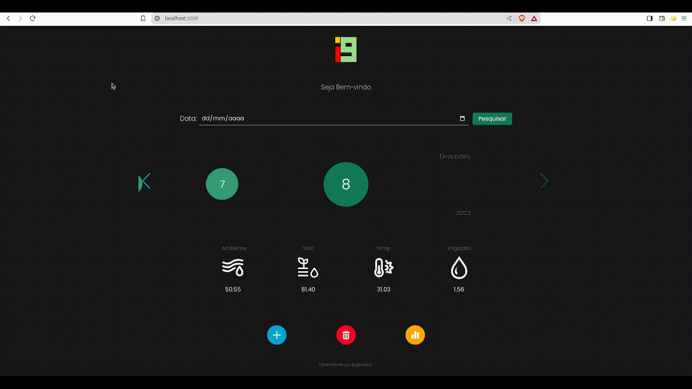

A necessidade de monitorar, armazenar e analisar continuamente as variáveis ambientais de uma estufa indoor (umidade ambiente, umidade do solo, temperatura ambiente e volume de água), permitindo o acompanhamento preciso das condições de cultivo pelos responsáveis do projeto Smart Farming.
Trabalhei no projeto da API com o parceiro acadêmico i9 Fatec no desenvolvimento de um website para leitura, armazenamento em banco de dados relacional (MySQL) e visualização gráfica interativa dos dados coletados pela estufa inteligente indoor fornecida pelos professores da FATEC SJC.
Desenvolvedor – Atuei no desenvolvimento da aplicação com foco na criação de gráficos dinâmicos, contribuí ativamente na prototipação da interface e participei da documentação do projeto. Trabalhei em conjunto com a equipe para garantir que o sistema refletisse as necessidades dos usuários de forma funcional e visualmente clara.
Durante esse projeto, aprimorei minhas habilidades em Flask (backend), CSS e JavaScript (frontend), além de utilizar bibliotecas como Chart.js para criar representações visuais dos dados coletados pela estufa inteligente. Também tive contato com ferramentas como Git para versionamento e Jira para gerenciamento ágil de tarefas.
Desenvolvi habilidades essenciais de trabalho em equipe, comunicação eficaz entre membros da equipe técnica e entendimento das necessidades do usuário final. Além disso, aprendi a lidar com prazos e a manter o foco no objetivo principal mesmo diante de desafios técnicos ou mudanças nas prioridades do projeto.


Demonstração em GIF do sistema Smart Farm em funcionamento